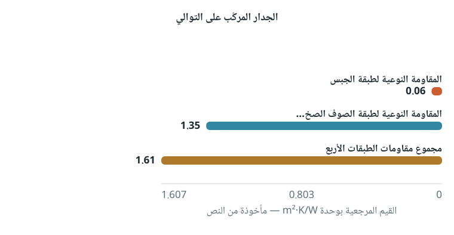

الجدار المركّب على التوالي
Composite Wall in Series
جدار من طبقات متتالية تمر بها الحرارة نفسها في الحالة المستقرة، فتُجمع مقاوماته النوعية جمعًا مباشرًا ويصير مجموعها هو مقاومة الجدار كله.
الجدار المركّب على التوالي جدار من طبقات متلاصقة تمر بها الحرارة نفسها في الحالة المستقرة، فيُكتب معدل انتقال الحرارة بالمعادلة (2.13d) عند Janna: q_x = (T₀ − T₃)/(Δx₁/k₁A + Δx₂/k₂A + Δx₃/k₃A)، أي أن الفرق الحراري الكلي مقسوم على مجموع مقاومات الطبقات. ويعطي Janna مثالًا محلولًا لجدار من طوب وألياف زجاجية وخشب.
الخاصية العملية: المجموع لا المتوسط. جدار من أربع طبقات بمقاومات نوعية 0.06 و1.35 و0.147 و0.05 م²·كلفن/واط له مجموع 1.607، والطبقة الثانية وحدها تسهم بـ1.35/1.607 = 84.0% من المقاومة. وعند فرق حراري 20 كلفن يكون الفيض 20/1.607 = 12.45 واط/م²، ويهبط عبر الصوف الصخري وحده 20×1.35/1.607 = 16.80 كلفن من العشرين. فالجدار يُقرأ بموضعه الأثقل: العزل حيث تُنجز معظم المقاومة، والطبقة الإنشائية تحمل ولا تعزل.
وإذا احتُسب المتوسط الحسابي للموصليات لا للمقاومات لخرج رقم لا معنى له: متوسط الموصليات يكافئ توصيلًا متوازيًا لا تواليًا، ويُخطئ في الجدار ذي الطبقة العازلة الواحدة بنسبة قد تتجاوز الضعف. ولهذا تُكتب طبقات الجدار بمقاوماتها، وتُجمع، ثم تُقلب للحصول على التوصيل الكلي.
كيف تعمل الظاهرة؟
في الحالة المستقرة لا تتراكم طاقة في أي طبقة، فما يدخل من وجهها الساخن يخرج من وجهها البارد: الفيض واحد عبر الطبقات كلها. قانون فورييه في كل طبقة يقول q'' = k·ΔT/Δx، ومن ثبات q'' يخرج أن فرق الحرارة على الطبقة يتناسب مع مقاومتها النوعية Δx/k. فالجدار يتصرف كسلسلة عوائق: كل عائق يستهلك من الفرق الحراري الكلي بمقدار حصته من المقاومة. ودرجة الحرارة على الواجهات تُحسب تراكميًا من الوجه الساخن، وميل المنحنى داخل كل طبقة يساوي q''/k، فيكون الميل حادًّا في العازل (k صغير) مسطّحًا في المعدن. هذا هو أصل صورة «الحرارة تهبط درجات قليلة في العزل ودرجات كثيرة في الطوب»: الميل معكوس الموصولية، والحصة من الفرق معكوسة المقاومة.
العلاقة بالأرقام
الخطوات: (1) R''_i = Δx_i/k_i لكل طبقة: 0.06 و1.35 و0.147 و0.05 م²·كلفن/واط. (2) المجموع: 0.06 + 1.35 = 1.41؛ + 0.147 = 1.557؛ + 0.05 = 1.607. (3) الفيض عند ΔT = 20 كلفن: q'' = 20/1.607 = 12.45 واط/م². (4) هبوط الحرارة على كل طبقة: q''·R''_i: 12.45×0.06 = 0.75 كلفن؛ 12.45×1.35 = 16.80؛ 12.45×0.147 = 1.83؛ 12.45×0.05 = 0.62؛ والمجموع 20.00 كلفن. (5) حصة العزل: 1.35/1.607 = 84.0%. (6) بالمقاومة المطلقة K/W تُقسم على المساحة: لجدار 12 م² تصير المقاومة 1.607/12 = 0.134 كلفن/واط، والقدرة 20/0.134 = 149 واط، أي 12.45×12 = 149 واط.
مفاهيم متقاربة
الخلط الأول: مع التوازي. جدار من طوب بينه وبين قوائم خشبية يُحسب شبكة توازٍ لا توالي، وقيمته تقع بين حدّي الطبقتين لا مجموعهما. الخلط الثاني: مع المتوسط الحسابي للموصليات، وهو مكافئ لتوازٍ وهمي ويبالغ في أداء العزل بشدة. الخلط الثالث: مع مقاومة التلامس، وهي طبقة هواء مجهرية عند الواجهة تُضاف مقاومتها إلى المجموع وتصير مسيطرة إن كانت الواجهات غير مستوية. الخلط الرابع: مع مقاومة الحمل السطحي 1/(hA)، وهي تُضاف إلى السلسلة نفسها لكنها ليست داخل المادة، فيُجمع الكل قبل القسمة. الخلط الخامس: مع الجدار المتجانس، حيث الميل خطّ واحد لا خطوط متعددة.
حدود التطبيق
ينكسر النموذج إذا لم يكن الفيض أحادي البعد: جسور حرارية كقوائم معدنية أو زوايا أو نوافذ تجعل الحرارة تسلك مسارات جانبية، فيصير الجدار شبكة لا سلسلة ويقلّ خطأ الحساب التوالي مع ازدياد التوصيل الجانبي. وينكسر إذا لم تكن الحالة مستقرة، فالسعة الحرارية للطبقات تُبطئ الاستجابة وتُخزّن طاقة، ولا يكفي مجموع المقاومات لحساب زمن التسخين. وينكسر إذا كانت الموصولية متغيرة بالحرارة بشدة كما في العزل عند الاشتعال أو الرطوبة، فتصير k دالة في الموضع والحرارة ويجب التكامل. وينكسر إذا وُجد توليد داخلي أو تسرب هواء داخل الطبقة المسامية، فالنموذج الصرف لا يمثل الحمل داخل المسام. وأخيرًا يفشل إذا لم تكن الطبقات كاملة العرض، أو إذا كانت الواجهات غير مستوية فتضاف مقاومة تماس غير مهملة.

| الكمية | القيمة | المصدر |
|---|---|---|
| المقاومة النوعية لطبقة الجبس | 0.06 m²·K/W | [1] |
| المقاومة النوعية لطبقة الصوف الصخري | 1.35 m²·K/W | [1] |
| مجموع مقاومات الطبقات الأربع | 1.607 m²·K/W | [1] |
| فيض الحرارة عبر الجدار عند فرق 20 كلفن | 12.45 W/m² | [1] |
| هبوط الحرارة عبر طبقة العزل | 16.80 K | [1] |
| حصة العزل من المقاومة الكلية | 84.0 % | [1] |
| المقاومة المطلقة لجدار بمساحة 12 م² | 0.134 K/W | [1] |
المصادر
استشهد بهذا المصطلح
الصيغتان مبنيتان من بيانات الصفحة نفسها: العنوان والتاريخ ورابط النسخة المنشورة.
الجدار المركّب على التوالي — Composite Wall in Series. (2026). ديوان المعرفة — انفراد. https://infiradev.com/diwan/terms/term-composite-wall-series.html
@misc{term-composite-wall-series2026,
title = {الجدار المركّب على التوالي},
titleaddon = {Composite Wall in Series},
howpublished = {{ديوان المعرفة — انفراد} — مرجع علمي عربي},
year = {2026},
url = {https://infiradev.com/diwan/terms/term-composite-wall-series.html},
urldate = {2026-11-26},
note = {مراجعة علمية: hermes — مراجعة آلية بالتكليف 2026-11-26}
}
راجعه: hermes — مراجعة آلية بالتكليف 2026-11-26 · 2026-11-26 · آخر تحديث 2026-11-26